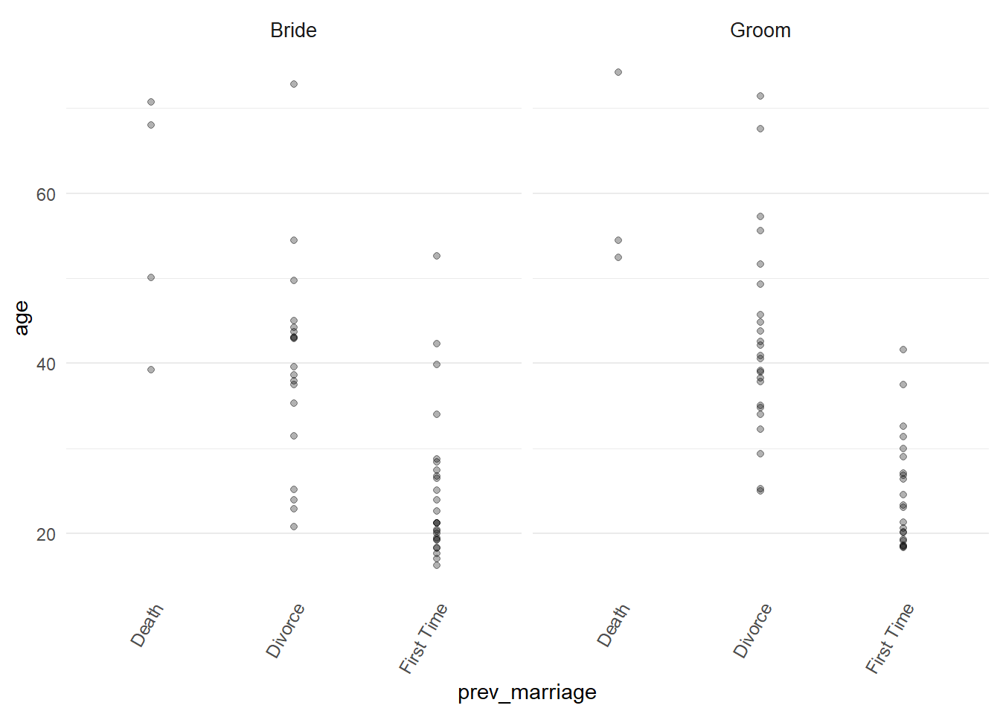
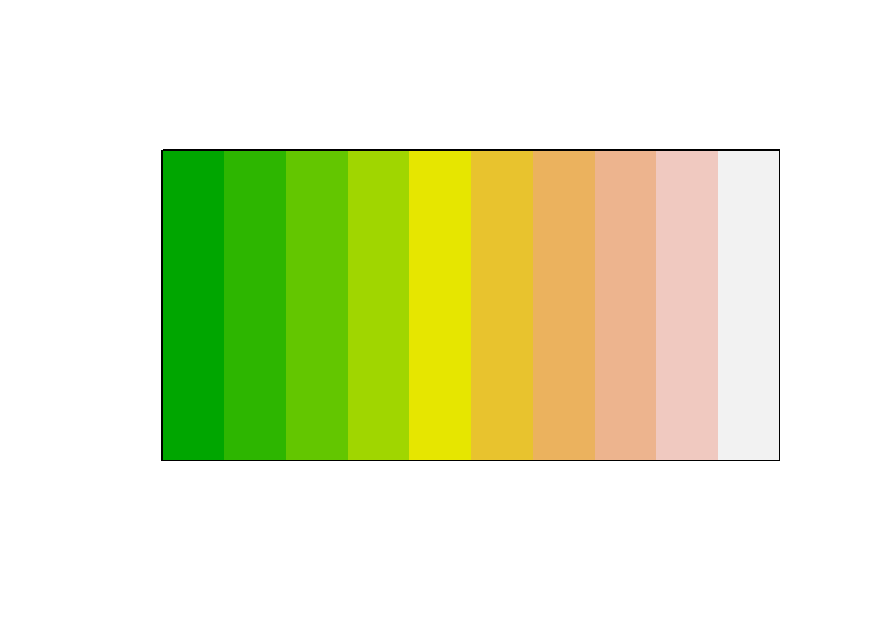

Chapter 8 Colours
##Color Brewer
We’ve already used colours in some of the code. Particularly the pallettes in the RColorBrewer package.
It has some ready made palletes that we can view like this.

- And the display can be limited to colour blind friendly palettes.
- we can set up a pallete of colours like this and view them in a simple bar plot
## Warning in RColorBrewer::brewer.pal(9, "Set2"): n too large, allowed maximum for palette Set2 is 8
## Returning the palette you asked for with that many colors
8.1 Prismatic
- Prismatic lets us play around with palettes by shifting the entire set at once. For example, starting with terrain..
- Turn the pallete grey
- Darken the pallete

- Make the pallete negative
8.2 Hand picked colours
You can also hand pick your own colours from this colour picking website reccomedned on an excellent blog post on using colours in ggplot by by Michael Toth.
The colour picking website was used to create then copy and paste the colours below.